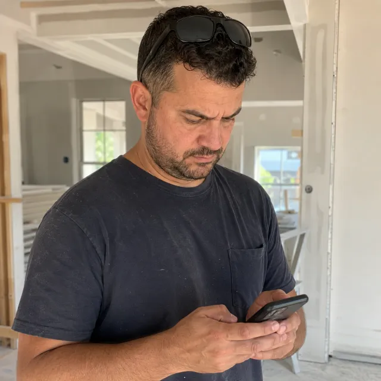
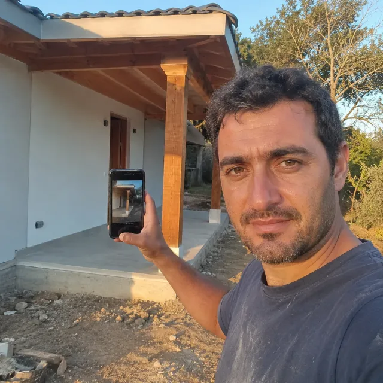
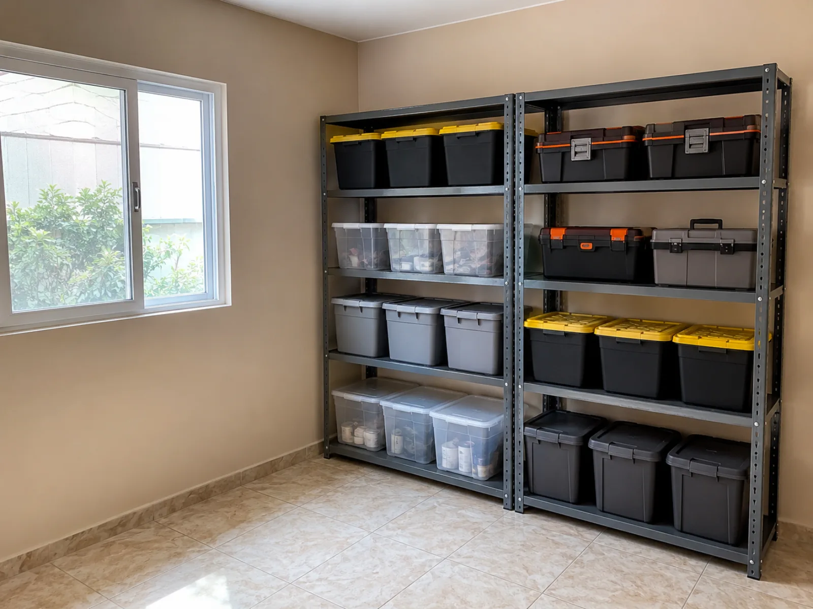
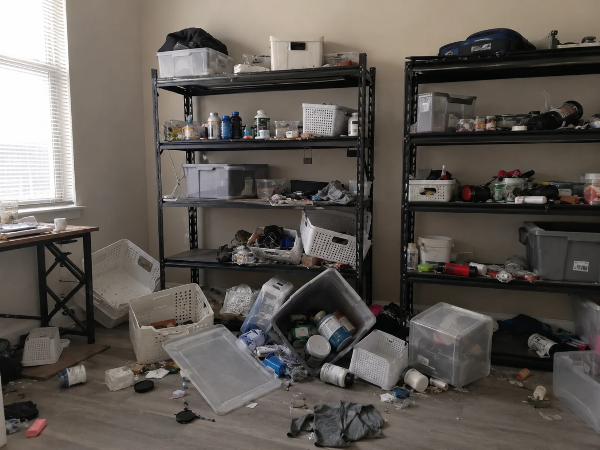

Más clientes y ventas en Panamá, con IA hecha para tu oficio
Cotiza en minutos, cobra sin discusiones, deja prueba de cada trabajo y cuida tu reseña. Diez herramientas con tu negocio en la memoria, en español, desde un solo lugar.
Sin contrato · sin tarjeta para ver la demo
- Hecho para servicios del hogar
- Todo en español
- Precio plano por negocio
Al que instala, repara y carga herramientas bajo el sol, nadie le había hecho su propia IA hasta hoy
El trabajo se acaba a las cinco. El negocio te persigue hasta la cama
Dejas la casa impecable. Pero el desorden del negocio te cuesta clientes y plata
Te suena alguna de estas. A casi todos los que trabajan servicios del hogar les pasa
Nada de esto es culpa tuya. Es que nadie te había dado la herramienta
Tú haces bien tu trabajo. Lo que cansa es hacer a mano, tú solo, lo que una buena herramienta hace por ti
Un portal con IA para cada parte de tu día de trabajo
Diez herramientas, cada una con un trabajo claro. No adivinan: trabajan con tus precios, tus clientes y tus trabajos ya guardados.
Una caja de texto que no guarda tus precios, no recuerda a tus clientes y no deja prueba que puedas mostrar
Cada herramienta con tu negocio en la memoria: tus precios, tus rutas, tus trabajos. Y todo deja registro
Prioridad de prospectos
A quién llamar primero hoy, en orden y con la acción lista
Precio defendible
Precio mínimo, recomendado y el porqué para el cliente
El mejor orden de ruta
En qué orden hacer tus visitas para manejar menos
Filtro de reseña
El contento va a la reseña; el molesto te llega a ti en privado
Calculadora de consumibles
Materiales y gasolina contados antes de ir a comprar
Resumen del equipo
El mensaje del lunes para tu cuadrilla, listo para enviar
Estimador desde fotos
El cliente manda fotos del trabajo; tú respondes con un rango serio
De trabajo a contenido
Ese trabajo que quedó bien se vuelve un post y un reel
Y siguen naciendo herramientas para tu oficio
Así se ve un martes tuyo con el portal
Todo lo que haces con IA en un día de trabajo, sin abrir cinco apps ni cargar nada en la cabeza
Empiezas sabiendo a quién llamar
El portal te ordena los prospectos del día: primero el que está más caliente
Sales con la ruta en orden
Las visitas acomodadas para manejar menos y llegar a tiempo

Un cliente manda fotos del trabajo
Le respondes con un rango serio en dos minutos, sin ir a verlo
Cotizas con base, no de memoria
Precio mínimo y recomendado, con el porqué listo para el cliente

Dejas prueba del trabajo
Foto de antes y después con la hora. Cuando pregunten, muestras
Pides la reseña sin miedo
El cliente contento va a la reseña; el molesto te llega a ti en privado
Ese trabajo bien hecho trabaja para ti
Se vuelve un post y un reel, y sale el pedido de reseña
De un reel a una venta, sin que se te caiga nadie por el camino
Nuestro marketing te trae gente que no te conocía. El portal la va llevando de la mano: del primer "hola" a la cotización, y de la cotización al trabajo cobrado. Baja despacio y míralo correr.
Reels, anuncios y páginas que hacemos para ti
Gente nueva que te empieza a escribir
El portal cotiza y da seguimiento por ti
Trabajo cobrado, con prueba y reseña


antes despuésTu trabajo ya habla claro. Ahora tu negocio también
La bitácora hace esto con cada trabajo tuyo: foto de antes, foto de después, fecha y hora. Cuando el cliente pregunta por qué costó lo que costó, tú no explicas: muestras. Arrastra la manija y velo.
Un precio plano por tu negocio. No por cada técnico
Los tres planes están listos hoy. Te recomendamos Crecimiento
Inicial
US$39 / mes
El que arranca
- 5 herramientas esenciales
- Reseña incluida
- Precio plano por negocio
Crecimiento
US$89 / mes
El operador de todos los días
- Las 10 herramientas, una por área
- Cubre todo el arco de tu trabajo
- Reseña incluida
Pro
US$169 / mes
Quien también crea contenido
- 15 herramientas
- Con imagen, voz y video
- Reseña incluida
Las apps de afuera te cobran por cada persona de tu cuadrilla y te esconden la reseña tras un pago aparte. Aquí pagas un precio plano por plan y la reseña va incluida.
Mañana puedes arrancar el día con tu negocio claro
Mira la demo hoy, carga tus servicios esta semana, y la próxima cotización sale con base. Sin enredos, en un solo lugar.
Sin contrato · la demo es gratis · en español